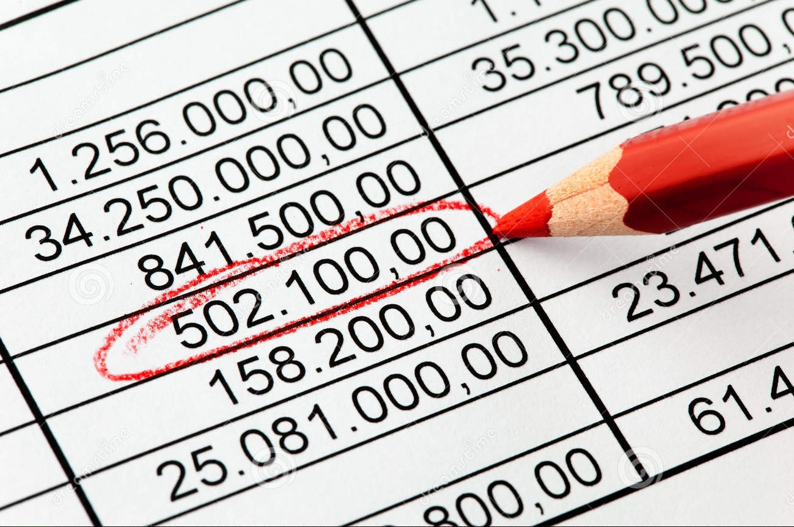

Los gastos son una parte inevitable de cualquier negocio, y para las MiPyMes, administrarlos de manera eficiente es crucial para la rentabilidad y el crecimiento. Una adecuada planificación de gastos permite a las empresas:
Identificar y controlar sus egresos
Optimizar el uso de sus recursos
Anticipar y prevenir problemas financieros
Alcanzar sus objetivos de negocio de manera más efectiva

PASOS PARA LA PLANIFICACIÓN DE GASTOS
La planificación de gastos en MiPyMes no requiere procesos complejos. Se puede realizar siguiendo estos sencillos pasos:
Establecer un presupuesto: Determine cuánto dinero planea gastar la empresa en un período específico (mes, trimestre, año). Considere factores como los costos fijos y variables, y objetivos de negocio.
Categorizar los gastos: Divida los gastos en categorías como alquiler, servicios públicos, materia prima, etc. Esto permite un análisis más detallado.
Registrar los gastos: Lleve un registro detallado de todos los gastos, incluyendo fecha, monto, categoría y una breve descripción.
Analizar los gastos: Compare los gastos reales con los presupuestados. Identifique áreas donde se gasta más de lo previsto y posibles oportunidades de ahorro.
Ajustar el presupuesto: Si es necesario, realice ajustes al presupuesto en función del análisis realizado. Esto permite mayor flexibilidad y adaptación a cambios.
Puede hacer uso de hojas de excel para facilitar el registro de todos estos datos de manera ordenada.
CONSEJOS ADICIONALES
Para una mejor planificación de gastos en su negocio, considere estos consejos:
Negociar con proveedores:Busque mejores precios y condiciones de pago con sus proveedores.
Implementar políticas de ahorro:Establezca normas para reducir gastos innecesarios, como el uso eficiente de energía o materiales.
Monitorear el mercado: Manténgase informado sobre los precios de insumos y servicios para identificar oportunidades de ahorro.
Revisar el plan de gastos periódicamente: Revise y ajuste su plan de gastos al menos cada trimestre para adaptarlo a los cambios del negocio.
La planificación de gastos no es solo una buena práctica financiera, sino una herramienta esencial para el éxito de las MiPyMes. Al dedicarle tiempo y esfuerzo a este proceso, las empresas pueden optimizar sus recursos monetarios.